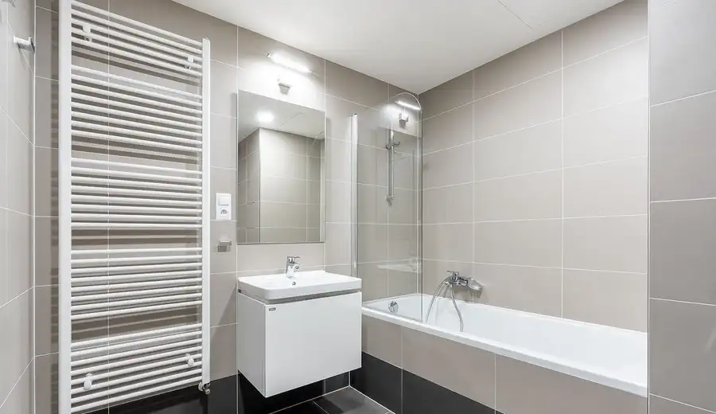
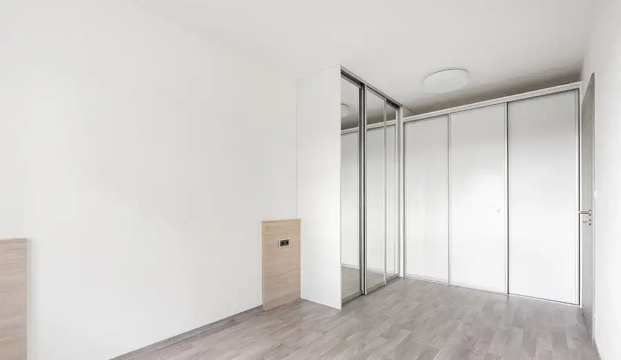
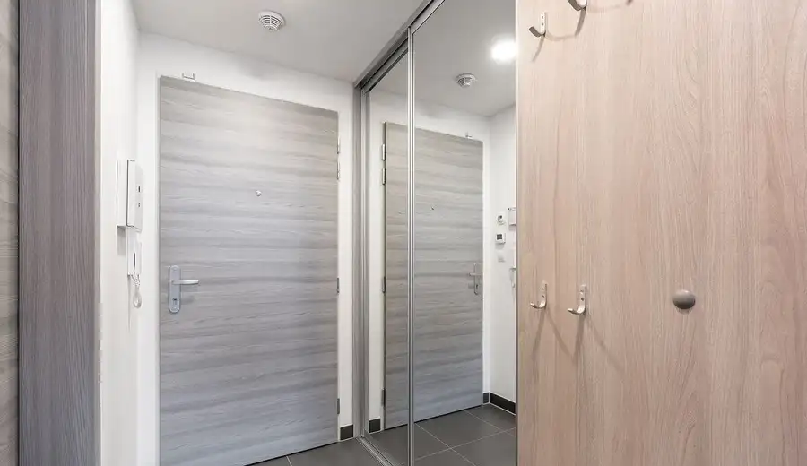
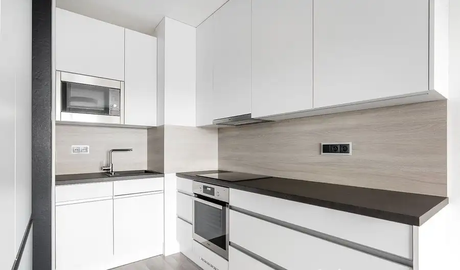
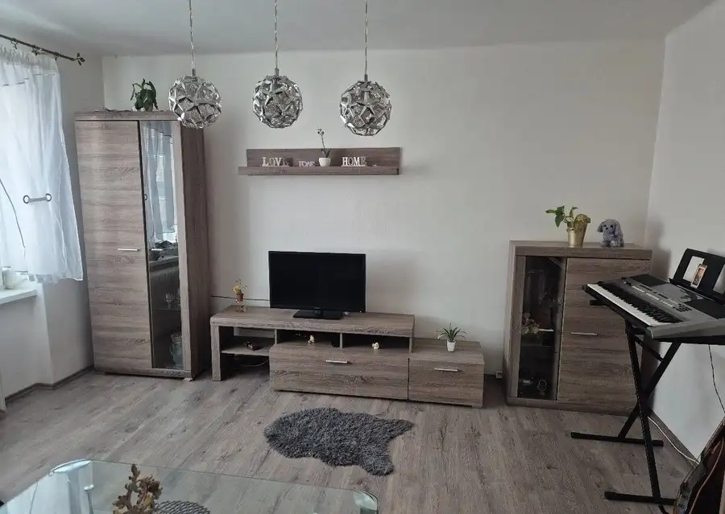
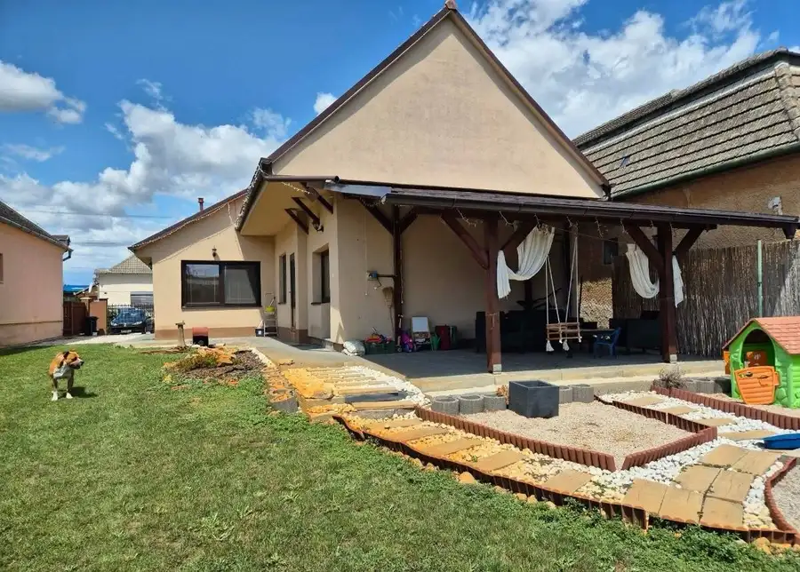
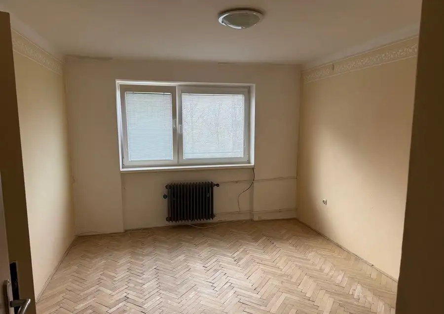

Moderné bývanie bez investícií: Kompletne zrekonštruovaný 1-izbový byt (Nové Zámky, Novomestská ul.)
Nové Zámky




- Dispozícia1-izbový
- Plocha38 m²
- Poschodie3. z 7
- StavKompletná rekonštrukcia
- VlastníctvoOsobné
- Energetická triedaA
O nehnuteľnosti
Hľadáte štýlový, kompletne obnovený domov v obľúbenej časti Nových Zámkov, do ktorého sa stačí len nasťahovať? Alebo hľadáte investičnú nehnuteľnosť v zateplenom dome bez nutnosti akýchkoľvek ďalších úprav?Realitná kancelária Hausia vám ponúka na predaj vkusný a moderný 1-izbový byt na Novomestskej ulici v Nových Zámkoch. Byt sa nachádza na ideálnom 3. poschodí v kompletne zateplenom bytovom dome. Nehnuteľnosť prešla v roku 2025 komplexnou rekonštrukciou a predáva sa čiastočne zariadená, čo novému majiteľovi výrazne uľahčí nasťahovanie.Parametre a hlavné výhody bytu:Kompletná rekonštrukcia (2025): V byte boli vymenené kompletne nové rozvody (elektrina, voda), stierky, podlahy, nová kúpeľňa so sanitou a kuchynská linka na mieru.Maximálne využitý priestor: Byt je bez balkóna, vďaka čomu je celá výmera plne využitá v prospech vzdušného a svetlého obytného priestoru.Čiastočne zariadený: Vybrané kusy nábytku a vybavenia zostávajú v byte, čo ušetrí vaše počiatočné náklady.Zateplený bytový dom: Zabezpečuje nízke náklady na vykurovanie a príjemnú vnútornú klímu počas celého roka.Poschodie: 3. poschodie – skvelý stred, ktorý poskytuje dostatok súkromia aj dennú svetelnosť.Príslušenstvo: K bytu prislúcha aj praktická pivnica v suteréne na odkladanie bicyklov či sezónnych vecí. Výhody lokality (Novomestská ulica):Novomestská ulica patrí medzi veľmi obľúbené a pokojné lokality s vynikajúcou občianskou vybavenosťou:Všetko po ruke: V pešej dostupnosti nájdete potraviny, obchody, reštaurácie, lekáreň aj služby.Dostupnosť: Rýchly prístup do centra mesta aj na hlavné dopravné ťahy.Zeleň a parkovanie: Príjemné prostredie s dostatkom zelene a bezproblémovým parkovaním priamo pri dome.Prečo kúpiť túto nehnuteľnosť cez Hausia?V Hausia si zakladáme na bezpečnosti obchodu a profesionálnom servise. Pri kúpe pre vás zabezpečíme:Kompletný právny servis: Zmluvy autorizované právnikom pre vašu 100% ochranu.Financovanie na mieru: Naši hypotekárni špecialisti vám pomôžu vybaviť najvýhodnejší úver v ktorejkoľvek banke a zabezpečia znalca.Kataster bez poplatkov: Základný správny poplatok (kolok) pri prepise hradíme za vás.Popredajný servis: Kompletný prepis energií (voda, elektrina, plyn) vybavíme za vás po odovzdaní kľúčov.Cena: 102 000 €(Cena je konečná, vrátane provízie a kompletného servisu RK Hausia.)Príďte si tento moderný byt pozrieť osobne!Kontaktujte ma ešte dnes a dohodnite si obhliadku: Hulala Jaroslav 0949 687 832 jaroslav.hulala@hausia.sk www.hausia.sk
Parametre
- Cena vrátane energií
- Nie
- Druh
- 1 izbový byt
- Dátum zverejnenia
- 18. 09. 2026
- Energetický certifikát budovy
- A
- Podlažie
- 3
- Počet nadzemných podlaží
- 7
- Stav nehnuteľnosti
- Kompletná rekonštrukcia
- Telekomunikácie
- Telefón, Internet, Káblová TV, Optická sieť
- Typ
- Predaj
- Typ konštrukcie
- Panelová
- Vlastníctvo
- Osobné
- Vybavenie
- Pivnica, Verejné parkovanie
- Vykurovanie
- Ústredné
- Úžitková plocha
- 38 m²
Kde to je


Mohlo by Vás zaujímať

BytNové 87 900 €Chytro vyriešený priestor s okamžitým výnosom: Moderný 3-izbový tehlový byt (Komárno, Sústružnícka ul.) Komárno 3-izbový58 m²1. podlažie
DomNové 164 900 €Kompletne obnovený dom s bazénom a terasou: 4-izbový rodinný dom (Zemné, Ľaliová ul.) Zemné 250 m²
BytNové 77 000 €Poctivý tehlový základ pre váš vysnívaný domov: 2-izbový byt na 1. poschodí (Komárno, Budovateľská ul.) Komárno 2-izbový58 m²1. podlažie